Homeostasia vista pela urina. O rim ajusta o que excreta para
defender o meio interno; os índices urinários leem esse ajuste e revelam o mecanismo da LRA. As Fig. 1–13
voltam no Caso, na Trilha e na Avaliação. Atribuição em CREDITS.md (em curadoria).
Todos os índices co-variam: são a mesma avidez tubular vista por ângulos diferentes.
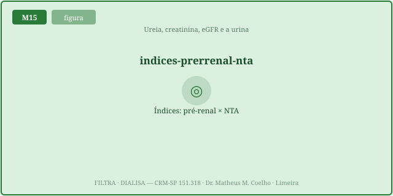
"Fração de excreção" = quanto do filtrado escapa. Baixa = reabsorção ávida.
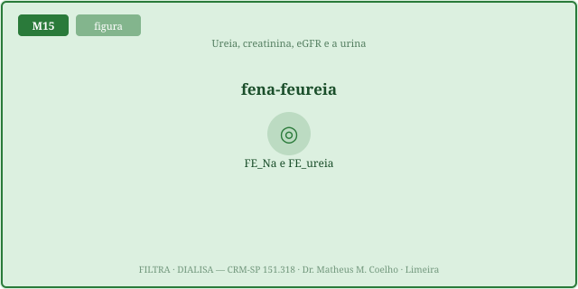
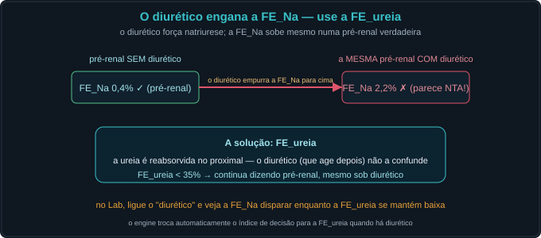
A ureia é reabsorvida (segue a água); a creatinina é filtrada e secretada. Daí a BUN:Cr.
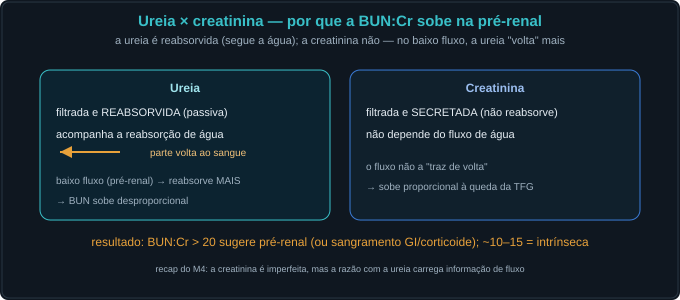
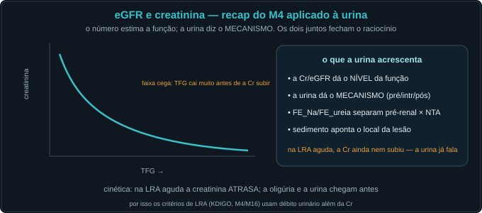
Os cilindros são moldes do túbulo; o que contêm aponta o mecanismo.
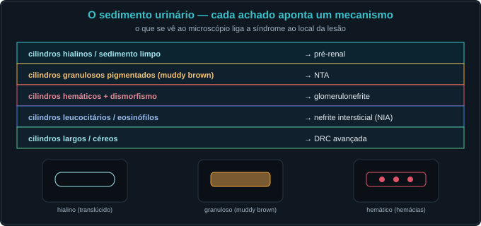
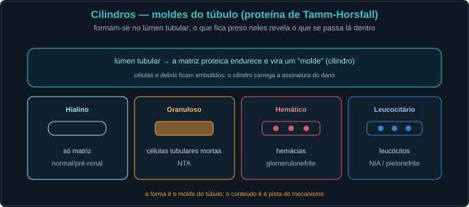
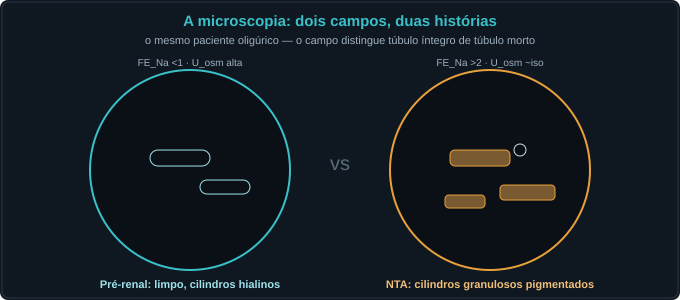
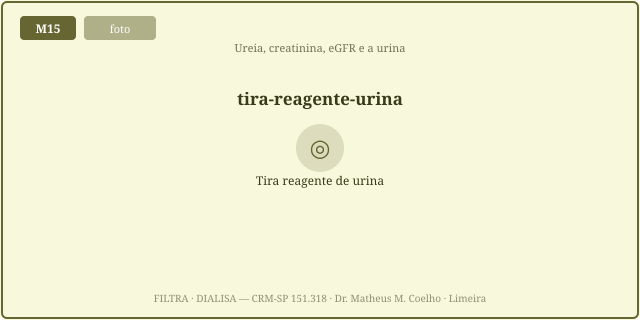
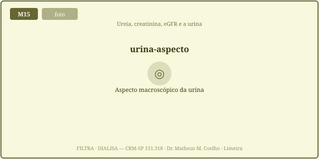
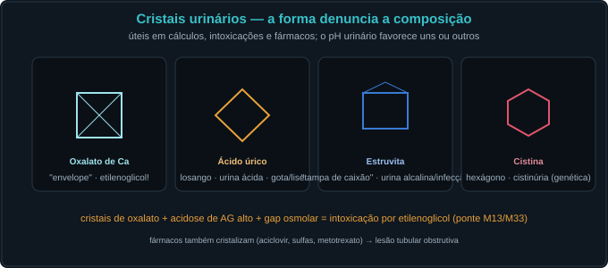
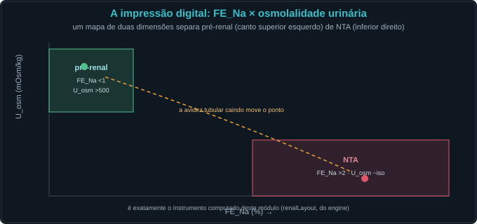
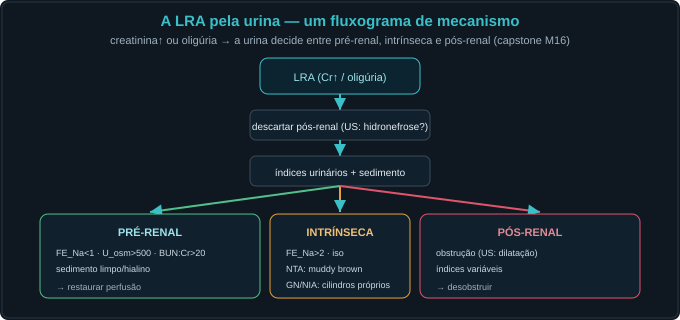
Idoso, vômitos e diarreia há 3 dias, oligúrico. Cr subiu de 1,0 para 2,4. Em uso de furosemida por ICC.
O MECANISMO: se o túbulo está íntegro (pré-renal) ou lesado (intrínseca/NTA). O número (Cr) dá só o nível.
A fração do Na filtrado que é excretada: (U_Na·P_Cr)/(P_Na·U_Cr)×100. Baixa = reabsorção ávida.
<1% = pré-renal (túbulo segura o Na); >2% = NTA (túbulo lesado deixa escapar).
O diurético força natriurese → FE_Na sobe mesmo na pré-renal. É um confundidor.
A FE_ureia (<35% = pré-renal): a ureia é reabsorvida no proximal, antes do sítio do diurético.
A ureia é reabsorvida com a água; no baixo fluxo reabsorve-se mais → BUN sobe desproporcional à Cr.
Pré-renal concentra (>500); NTA perde a capacidade de concentrar (~isosmótica, ~300).
NTA (células tubulares mortas no molde). O "muddy brown".
Glomerulonefrite (hemácias dismórficas + cilindros hemáticos).
Cadeias leves (mieloma) — a proteína da fita vê albumina. Pedir relação proteína/Cr.
Mioglobina (rabdomiólise) ou hemoglobina — a fita dá "sangue" positivo sem hemácias na microscopia.
Intoxicação por etilenoglicol (com gap osmolar) — ponte M13/M33.
LRA → descartar pós-renal → índices + sedimento → pré-renal/intrínseca/pós-renal (capstone M16).
Os controles do Lab movem o ponto. Avidez alta (túbulo íntegro) leva ao canto pré-renal (alto/esquerda); avidez baixa (lesado) ao canto NTA (baixo/direita). O diurético empurra a FE_Na à direita.
| Índice | Atual | Comentário |
|---|---|---|
| FE_Na (%) | — | <1 pré / >2 NTA |
| FE_ureia (%) | — | <35 pré (sob diurético) |
| Na urinário (mEq/L) | — | <20 pré / >40 NTA |
| U_osm (mOsm/kg) | — | alta = concentra |
| BUN:Cr | — | >20 pré-renal |
| Sedimento | — | o local da lesão |
| Índice usado · diagnóstico | — | 5 passos |